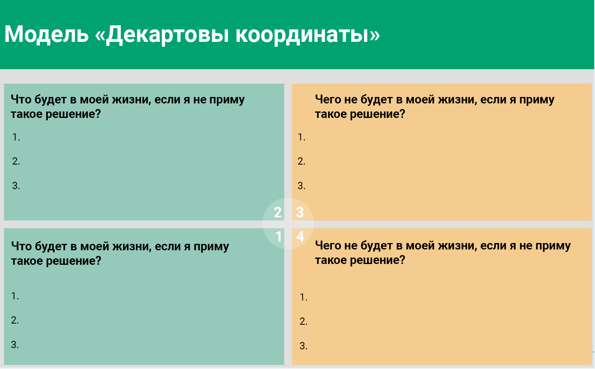

Как принимать решения? Модель «Декартовы координаты»
Здравствуйте, с вами снова Ошемкова Наталья. Сегодня я хочу рассказать вам про технику, которая позволяет принимать решения. Речь пойдет не о ситуациях, когда перед вами пятнадцать разных выборов и путей, а о том, как решить, делать что-то или нет — когда перед вами есть конкретный выбор, который вы можете принять или не принять. Эта техника называется «Декартовы координаты». На самом деле связи с «декартовыми координатами» никакой, кроме того, что листочек нужно разделить на четыре части двумя перпендикулярными линиями. Хотя я советую брать четыре отдельных листочка, чтобы то, что вы пишете в одной области, не мешало вам думать о том, что вы пишете в другой области. Это может быть довольно важно. Сама техника очень простая. По сути она состоит из четырех вопросов. Но я, пожалуй, расскажу про нее на примере, чтобы действительно было понятно, чем эти вопросы отличаются друг от друга, и как это должно работать.
Вопросы звучат так:
1. Что будет в моей жизни, если я приму такое решение? (плюс+, плюс+)
2. Что будет в моей жизни, если я не приму это решение? (плюс+, минус-)
3. Чего не будет в моей жизни, если я приму это решение? (минус-, плюс+)
4. Чего не будет в моей жизни, если я не приму это решение? (минус-, минус-)

Вопросы вроде простые, и кажется, что они про одно и тоже. Но на практике выясняется, что часто ответы получаются разные. Поэтому лучше брать четыре разных листа, чтобы не подглядывать в другие области, когда вы заполняете одну из них.
Давайте возьмем какое-нибудь решение, с которым сталкиваются многие люди, например, пойти ли учиться чему-нибудь. Кто-то выбирает второе или третье высшее, кто-то решает, защищать или не защищать диссертацию, кто-то думает, проходить ли МВА, и т.д. Такие вопросы часто возникают в жизни людей, особенно тех, кто занимается бизнесом, когда они понимают, что не хватает знаний в какой-то области, и непонятно, что лучше, самому пойти учиться или нанять человека, который в этом разбирается.
1. Итак, дилемма: пойти ли учиться на курсы повышения квалификации? И первый вопрос техники «Декартовы координаты»: что будет в моей жизни, если я пойду? Обратите внимание, что здесь ничего не говорится про позитив или негатив — это мы потом оценим. Для начала мы просто отвечаем на этот вопрос: что появится в моей жизни или что сохранится, если я пойду на эти курсы?
Во-первых, в моей жизни будут эти самые курсы, то есть появится новая деятельность: придется посещать лекции или слушать вебинары, может быть, нужно будет куда-то приезжать по расписанию. То есть в моей жизни появится новая дополнительная активность, которой раньше не было. Возможно, в моей жизни появятся новые люди: преподаватели, студенты, с которыми мы будем вместе учиться, и вместе с ними придут какие-то новые взаимодействия с окружающим миром, что тоже может повлиять на мою жизнь.
Что еще может появиться? Появятся траты. А в конце курсов — диплом, новая «корочка», новая строчка в резюме или что-то в этом духе — то, что для вас ценно. Может появиться усталость. Если я трачу силы, время, то через какое-то время мне, возможно, будет сложно с этим справляться.
Далее. Появятся новые знания, идеи, стратегии — если у вас есть хорошее предвкушение про эти курсы, и вы думаете, что это вас как-то продвинет. Может быть, появятся какие-то новые чувства: вдохновение, воодушевление, которые обычно идут рука об руку с обучением, и т.д.
2. Что пропадет из моей жизни, если я решу пойти на эти курсы? Какое-то количество свободного времени и денег. Возможно, пропадут какие-то другие варианты обучения, которые я отброшу, выбрав эти курсы. Могут пропасть какие-то возможности. Например, если я сейчас решаю получать новое высшее образование в той стране, где я живу, то, по крайней мере, в ближайшие пару лет я не смогу эмигрировать. То есть могут отвалиться возможности, которые так или иначе завязаны на то же время и те же ресурсы.
Могут пропасть какие-то сомнения. Например, эти курсы связаны с информацией, которой мне недостает, и я все время думаю о том, что если б разбиралась в этом, то знала б, что делать. Я и надеюсь, что после этих курсов мои сомнения пропадут. Или я наняла специалиста и сомневаюсь, правильно ли человек делают эту работу. Но не могу проверить и оценить, потому что у меня нет соответствующей экспертности. Наверно, благодаря этим курсам мои сомнения рассеются, и я буду понимать, что кому делегировать и как проверить результаты работы.
Могут пропасть какие-то люди, которые не поддерживают это решение. Может быть, я не смогу участвовать в каких-то мероприятия, которые будут проходить во время моей учебы. Если я буду учиться по выходным, то придется отказаться от выездов за город или каких-то других активностей, к которым я привыкла.
3. Что будет в моей жизни, если я не пойду туда?
Возможно, появятся сожаления об упущенной возможности. Некоторым людям возможности, от которых они отказались, долго потом напоминают о себе. Появится свободная сумма денег, которую вы, например, откладывали на обучение. Будет больше встреч с друзьями, вечеринок и еще чего-то в этом духе, то есть больше свободного времени.
Что еще будет в моей жизни? Возможно, будет какая-то стабильность — раз я ничего не меняю. Может быть, вы посмотрите на это иначе: сохранится рутина, которая есть до принятия решения. Для кого-то это хорошо, для кого-то плохо, а для кого-то просто факт. Но, тем не менее, что-то останется без изменений, и к этому можно по-разному относиться.
Может быть, появится какое-то реальное горе — если вы давно обдумывали это обучение. Про МВА люди обычно не думают с детства, а вот про высшее образование иногда да. Наш социум говорит, что его нужно получить. В некоторых семьях даже про аспирантуру люди с детства думают. И если человек однажды принимает решение, что он туда не пойдет — это прощание с частью своих планов на будущее, с мечтой, и, может быть, это нужно будет так или иначе отгоревать.
Может быть, появится необходимость перед кем-то оправдываться, объяснять свое поведение — перед тем, кто от вас ожидал, что вы туда пойдете. Обычно это бывает с давними планами, о которых мы только что говорили.
4. Чего не будет в моей жизни, если я не пойду на курсы?
Первыми в голову приходят симметричные ответы: не будет новых знаний, новых знакомств, каких-то изменений в жизни. Чего еще не будет? Возможно, не будет лишнего напряжения и переработок, домашних заданий, дополнительной ответственности и т.д., то есть не будет чего-то, что структурирует мою жизнь против моего желания.
Чего еще не будет? Не будет, возможно, какой-то новой области в моей жизни, если я собиралась выучиться чему-то действительно новому. Эта дверь, возможно, захлопнется.
Может быть, не будет какой-то встряски. Для кого-то хорошо, что не нужно ни к чему новому адаптироваться, а для кого-то грустно, что не произойдет чего-то нового и неожиданного — того, с чем человек раньше не встречался. Не будет, может быть, какой-то моей новой роли. Возможно, не будет какой-то новой части меня, которую я открою благодаря обучению. И т.д., и т.п.
Я сейчас придумываю ответы, ставя себя в эту ситуацию, и, соответственно, вы слышите, как я отношусь к обучению. Понятно, что у вас могут быть совершенно другие ответы, но это хорошо демонстрирует, почему именно все четыре вопроса полезно себе задать. Когда вы так подробно разберете ситуацию, то получите более обширный список, чем если вы будете просто выписывать плюсы и минусы. С плюсами и минусами лучше поработать потом.
Когда вы ответите на эти четыре вопроса, каждый пункт теперь можно оценить: хорошо это для вас или плохо. Потом можно выписать глобальный список плюсов и минусов этого решения, а затем вы можете ваши пункты ранжировать — распределять по приоритетности. Некоторые люди, например, оценивают пункты в баллах, присваивают им вес или стоимость, а потом смотрят, что перевешивает.
Иногда, какой-то пункт оказывается настолько важным, что решение сразу становится очевидным — если этого не будет в моей жизни, то всё остальное зря. Так, конечно, бывает редко. Обычно, когда такое бывает, люди не очень сомневаются в своих выборах, но, тем не менее, так тоже может случиться. Бывают такие открытия, которые в процессе быстро приводят к конкретному решению.
Это техника выбора. В самом начале я сказала, что она хорошо работает при выборе из одного варианта — делать или не делать. Но иногда выборы из нескольких вариантов тоже полезно расписывать. Каждый выбор по отдельности. И может оказаться, что изначально перед вами было пять выборов, а, на самом деле, только один или два из них являются хорошими, а остальные в принципе не нужно рассматривать. Это очень облегчит вам задачу принятия решения. На этом эта техника заканчивается. Спасибо за внимание.